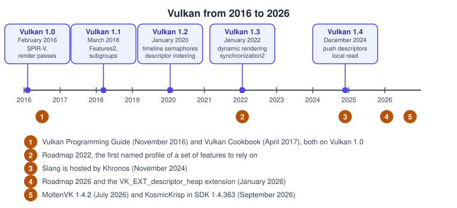
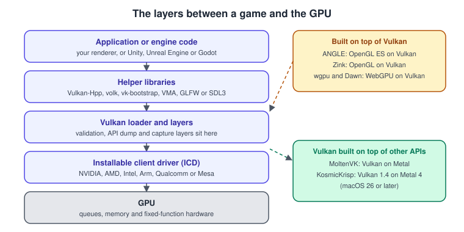
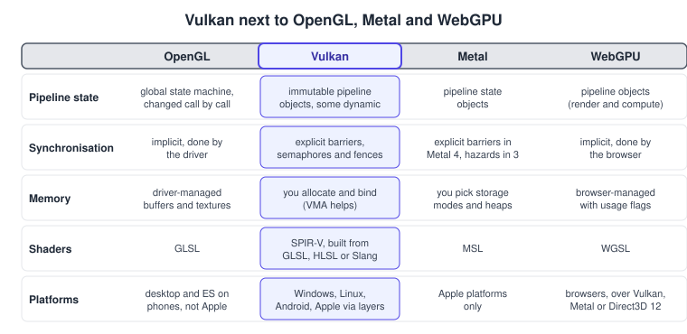
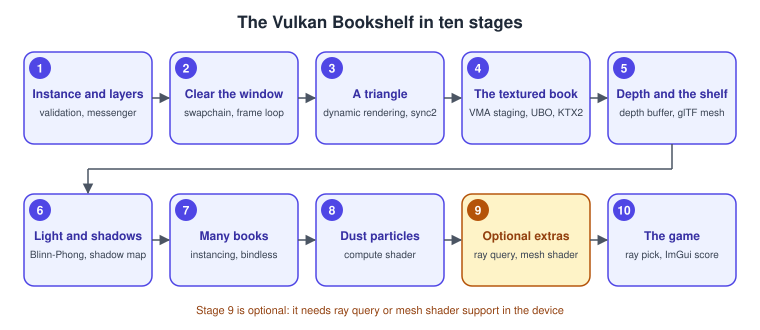

Vulkan
|
This content was generated with the assistance of AI and should be verified against the official documentation before being relied on in production. |
Vulkan is the explicit, cross-platform graphics and compute API of the Khronos Group. It gives a program direct control of the GPU on Windows, Linux, Android, embedded systems and, through translation layers, Apple platforms, with a small, regular C API, a binary shader format (SPIR-V) that several shading languages compile to, and a layered design in which validation, capture and profiling are optional layers instead of costs paid by every program. This sub-section teaches Vulkan 1.4, the generation released in December 2024, with Vulkan 1.3 as the minimum of the running example and the 2026 roadmap features marked where they apply. It covers the instance and the device, the swapchain, synchronisation, memory with the Vulkan Memory Allocator, shaders in GLSL, HLSL and Slang, descriptors and bindless access, the graphics and compute pipelines, ray tracing, mesh shaders, Vulkan Video, the platforms, the C++ bindings and the debugging tools. It follows one running example, the Vulkan Bookshelf, from a first triangle to a small game, and it says plainly where Vulkan stands in 2026: the main low-level API outside Apple platforms, a specification that is still growing every year and an API whose newest features, such as descriptor heaps, are moving away from the first design of 2016. The pages build on the general pages of Graphics & Games; read those first if the rendering pipeline or the transformation chain are new to you.
What Vulkan and its neighbours are
| Name | What it is |
|---|---|
Vulkan |
The GPU API: instances, devices, queues, command buffers, pipelines, descriptors and synchronisation primitives, specified by the Khronos Group and implemented by the driver of each GPU vendor. |
SPIR-V |
The binary intermediate language of Vulkan shaders. GLSL, HLSL and Slang compilers produce it, and the driver turns it into GPU code. |
The Vulkan loader and layers |
The library that finds the drivers, forwards every call to them and inserts optional layers such as the Khronos validation layer. |
Vulkan-Hpp, volk and VMA |
The C++ bindings with RAII handles, a meta-loader that loads the function pointers and the allocator that sub-allocates memory. |
Slang |
A shading language with modules and generics that compiles to SPIR-V. It is hosted by Khronos and is the primary language of the Khronos Vulkan Tutorial. |
MoltenVK and KosmicKrisp |
Vulkan on top of Metal for macOS and iOS: a portability layer (MoltenVK) and a Vulkan 1.4 conformant driver built on Metal 4 (KosmicKrisp). |
OpenGL, Metal and WebGPU |
The other graphics APIs. OpenGL is frozen at 4.6, Metal is the Apple API and WebGPU is the browser API, implemented on top of Vulkan, Metal or Direct3D 12 (see WebGPU: Overview and Comparison with WebGL). |
Vulkan gives you the GPU and little else: you manage memory, synchronisation, frame pacing and the lifetime of every object, and you decide what a scene is. That is why most games use an engine that already speaks Vulkan, and why learning Vulkan first makes an engine’s behaviour predictable. The reasoning about when each layer pays off is in Choosing an API or Engine, and the idea of an explicit API is in Explicit vs Implicit APIs.
Where Vulkan sits

Vulkan 1.0 appeared in February 2016. Vulkan 1.1 (2018) added the Features2 queries and subgroups, 1.2 (2020) timeline
semaphores, descriptor indexing and buffer device address, 1.3 (2022) dynamic rendering and synchronization2, and 1.4 (December
2024) push descriptors, dynamic rendering local read and host image copy, and made several features mandatory. Khronos publishes a
roadmap profile about every two years that lists what a current device is expected to support, and on 23 January 2026 it
announced Roadmap 2026 together with the VK_EXT_descriptor_heap extension. No Vulkan 1.5 had been announced when this page was
checked. What each release promoted is on
Vulkan Versions, Profiles and Extensions.

The same layers appear in the general Graphics APIs vs Game Engines page. The loader and its layers are what make Vulkan debuggable: Instances, the Loader and Layers and Validation and Debug Utils explain them, and every later page uses them.
How Vulkan differs from OpenGL, Metal and WebGPU

OpenGL hides memory, synchronisation and most state behind the driver, so a small program is short and a large one is slow in ways that are hard to see. Vulkan moves those decisions to the application: more code for the first triangle, predictable cost for the thousandth. Metal sits between the two on Apple hardware, and its fourth generation moved closer to Vulkan with explicit barriers and residency. WebGPU keeps the explicit pipeline objects but leaves synchronisation and memory to the browser. Porting between them is covered on Porting from OpenGL to Vulkan, Metal and WebGPU, and the browser side by WebAssembly and Browser Canvas and WebGL for the wgpu and WebGPU context.
Version baseline
The facts below were checked on 1 November 2026 against the official pages cited in the last column. Items that follow a release can change, so check them again before relying on them.
| Item | Version and status | Source |
|---|---|---|
Core version |
Vulkan 1.4, released on 3 December 2024. No Vulkan 1.5 had been announced when this page was checked. |
|
Specification and headers |
Patch version 1.4.367 (Vulkan-Headers, 30 October 2026). |
|
Promoted in 1.4 |
Dynamic rendering local read, push descriptors, maintenance5 and 6, |
|
Promoted in 1.3 |
Dynamic rendering, synchronization2, |
The same appendix |
Legacy |
Render pass and framebuffer objects (superseded by dynamic rendering), synchronization1, |
|
Roadmap 2026 and descriptor heap |
The Roadmap 2026 milestone and |
|
Profiles |
Roadmap 2022, Roadmap 2024 and Roadmap 2026, the Android Baseline 2022 profile and the VPA-16 profile. The |
|
LunarG SDK |
1.4.363.0 (29 September 2026) for Windows, Linux and macOS. The specification PDF was removed from the SDK in 1.4.357. |
|
Apple |
KosmicKrisp (LunarG, Mesa-based, Vulkan 1.4 conformant, built on Metal 4, macOS 26 or later) ships in SDK 1.4.363. MoltenVK 1.4.2 (24 July 2026) is a Vulkan 1.4 portability layer and needs |
|
Android |
Vulkan since Android 7, Vulkan 1.1 on every 64-bit device with Android 10 or later, Vulkan 1.4 on Android 16, OpenGL ES frozen and ANGLE optional from Android 15. |
|
Vulkan SC |
Vulkan SC 1.0.22 (specification update of 22 July 2026), based on Vulkan 1.2. |
|
Slang |
Hosted by Khronos since 21 November 2024; release v2026.20 (17 October 2026). |
|
Vulkan Memory Allocator |
VMA 3.5.0 (26 October 2026). |
|
Video, ray tracing and mesh shaders |
Vulkan Video decodes H.264, H.265, AV1 and VP9 and encodes H.264, H.265 and AV1. Ray tracing ( |
When to choose what
Choose Vulkan when you are building a renderer or an engine feature, when you need to share one code base between Windows, Linux and Android, when you want ray tracing, mesh shaders, hardware video or the lowest overhead, or when you must understand what an engine does for you. Choose an engine when the scene, the physics and the tools matter more than control. Choose Metal for an Apple-only product: see Metal. The general criteria are in Choosing an API or Engine.
What’s covered
Orientation
| Page | Covers |
|---|---|
Core versions 1.1 to 1.4, extensions and promotion, feature chains and the roadmap profiles with vkprofiles. |
|
The corrections for the two books, row by row. |
|
The LunarG SDK on Windows, Linux and macOS, CMake, volk, Vulkan-Hpp, GLFW or SDL3 and the first checks. |
Foundations
| Page | Covers |
|---|---|
The instance, the API version, the loader, manifests, layers and portability enumeration. |
|
The Khronos validation layer and its modes, vkconfig, debug messengers, object names and labels. |
|
Enumeration, features and properties, queue families and device creation. |
|
Command pools, primary and secondary buffers, recording, |
|
Surfaces for every platform, present modes, swapchain creation and recreation, and semaphore reuse. |
|
Execution and memory dependencies, stage and access masks, image layouts, ownership transfer and events. |
|
Binary and timeline semaphores, fences and the frame-in-flight loop. |
Resources and shaders
| Page | Covers |
|---|---|
Heaps, memory types, staging, resizable BAR, sub-allocation and the Vulkan Memory Allocator. |
|
Usage, tiling, formats, views, copies, host image copy and sparse resources. |
|
The SPIR-V model, GLSL with glslc, HLSL with DXC, Slang with slangc and the SPIR-V tools. |
|
Set layouts, pools, push descriptors, push constants, dynamic offsets and update templates. |
|
Descriptor indexing, buffer device address, descriptor buffers and the descriptor heap extension. |
|
The std140, std430 and scalar layouts, with alignments and strides. |
Graphics pipeline
| Page | Covers |
|---|---|
The stages, the create-info structures, the pipeline layout and the pipeline cache. |
|
|
|
Dynamic State, Shader Objects and Pipeline Libraries in Vulkan |
Extended dynamic state, |
Vertex and index buffers, instancing, indirect and indirect-count draws and multi-draw. |
|
Depth formats, reversed-Z, stencil, blending and MSAA resolve. |
|
Samplers, anisotropy, KTX2 and Basis, and mip generation by blit. |
|
The legacy geometry stages, their cost on tile-based GPUs and the pointer to mesh shaders. |
Compute and advanced
| Page | Covers |
|---|---|
Dispatch, workgroups, shared memory, subgroups, atomics and cooperative matrices. |
|
|
|
Acceleration structures, ray queries, the ray-tracing pipeline and its shader binding table, and opacity micromaps. |
|
Video queues, sessions, the decoded picture buffer and decode and encode of every codec. |
|
Threading rules, pipeline caches, queries and timestamps, tile-based GPUs and profiling tools. |
|
RenderDoc, GFXReconstruct, the API dump layer and crash diagnostics. |
Platforms, bindings and the running example
| Page | Covers |
|---|---|
The NDK, pre-rotation, Swappy frame pacing, ANGLE and the Android Baseline profile. |
|
The portability subset, MoltenVK against KosmicKrisp and the macOS 26 requirement. |
|
Safety-critical constraints, the init and run phases and offline pipelines. |
|
C against Vulkan-Hpp, RAII, C++ modules and bindings for other languages. |
|
The first frame up to the textured, lit book. |
|
Many objects, ray-query picking and the game loop. |
|
The one-page A4 summary and the PDF to download. |
Coverage map
Official documentation areas
| Area | Official documentation | Pages |
|---|---|---|
Portal and specification |
The Vulkan portal, the specification with its versions, legacy and memory-model appendices, and the Khronos registry with reference pages, the XML and the proposals: the normative API |
Vulkan Versions, Profiles and Extensions, What Has Changed Since the Older Vulkan Guides |
Vulkan Guide |
Platforms, versions, profiles, SPIR-V, portability, tools, validation, the loader and layers, extensions and features, queues, window systems, |
Instances, the Loader and Layers, Synchronization and synchronization2, Memory Heaps, Types and VMA, Descriptors and Push Constants in Vulkan, Compute Shaders and Subgroups, Ray Tracing in Vulkan |
Khronos Vulkan Tutorial |
The triangle, vertex and uniform buffers, textures, depth, models, mipmaps, MSAA, compute, the ecosystem, profiles, Android, glTF and KTX2, multiple objects, multithreading, the ray-tracing course and the "Building a Simple Engine" chapters, in C++20 with Vulkan-Hpp RAII, dynamic rendering, Slang and timeline semaphores |
Bookshelf 1: From a Triangle to the Textured Book, Bookshelf 2: The Scene and the Game, Vulkan-Hpp, RAII and C++ Bindings |
Samples |
The Khronos samples documentation and the Vulkan-Samples repository: API, extension, performance and tooling samples |
Multithreading and Performance in Vulkan, Dynamic State, Shader Objects and Pipeline Libraries in Vulkan |
SDK and tools |
The LunarG SDK documentation: vkconfig, the Khronos validation layer, GPU-assisted validation, Debug Printf, synchronisation validation, GFXReconstruct, the API dump layer, vulkaninfo and vkprofiles |
Setting Up the Vulkan SDK and Toolchain, Validation and Debug Utils, Debugging and Capture Tools for Vulkan |
Android |
The Vulkan overview, frame pacing, pre-rotation, validation layers, shader compilers, the Android Baseline profile and Android GPU Inspector |
|
Apple |
MoltenVK, the notes on KosmicKrisp and the portability initiative: the portability subset |
|
Shading languages and memory |
The Slang documentation, the HLSL chapter of the Guide, glslang and shaderc, and the Vulkan Memory Allocator pages of GPUOpen: GLSL, HLSL and Slang to SPIR-V, and allocation strategies |
Shaders, SPIR-V and Shading Languages, Memory Heaps, Types and VMA, Shader Memory Layout in Vulkan |
Vulkan SC |
The Khronos Vulkan SC pages and registry: offline pipelines and static memory |
Concepts from the books
The two books are VPG (Graham Sellers with John Kessenich, Vulkan Programming Guide) and VCB (Pawel Lapinski, Vulkan Cookbook), and both are listed in the section bibliography. Each cell lists the chapters that contribute the concept, and the last column the pages that cover it. The books are consulted references: no text, figure or code is copied from them, and where a book and the official documentation disagree the documentation is followed.
| Concept | VPG | VCB | Pages |
|---|---|---|---|
Instance, layers and extensions |
1 |
1 |
Instances, the Loader and Layers, Validation and Debug Utils |
Physical and logical devices, queues |
1 and 3 |
1 |
|
Command buffers and submission |
3 |
3 and 9 |
|
Swapchain and window system integration |
5 |
2 |
|
Memory, buffers, images and sparse resources |
2 and 4 |
4 |
|
Barriers and image layouts |
4 and 11 |
3 and 4 |
|
Fences, semaphores and events |
11 |
3 |
|
SPIR-V and GLSL |
6 |
7 |
|
Descriptors and push constants |
6 |
5 |
|
Pipelines, the pipeline cache and dynamic state |
6 and 7 |
8 and 9 |
The Vulkan Graphics Pipeline, Dynamic State, Shader Objects and Pipeline Libraries in Vulkan |
Render passes, subpasses and input attachments |
7 and 13 |
6 and 12 |
|
Drawing, indirect draws and instancing |
8 |
9 |
|
Tessellation and geometry shaders |
9 |
7 and 12 |
|
Depth, stencil, MSAA and blending |
10 |
8 |
|
Queries and timestamps |
12 |
not covered |
|
Compute |
6 |
7, 8 and 12 |
|
Multithreading |
1 and 13 |
8 and 9 |
|
Textures, models and math helpers |
not covered |
10 |
Textures, Samplers and Mipmaps in Vulkan, Bookshelf 1: From a Triangle to the Textured Book, Bookshelf 2: The Scene and the Game |
Lighting, shadows, skybox, billboards, terrain and post-processing |
not covered |
11 and 12 |
Bookshelf 2: The Scene and the Game, Bookshelf 1: From a Triangle to the Textured Book |
Official concepts missing from the books
Neither book covers the features that arrived after Vulkan 1.0, and several that every current program uses were introduced after both were written. They are covered from the official documentation.
| Concept | Pages |
|---|---|
Hardware ray tracing and ray queries |
|
Mesh and task shaders |
|
Vulkan Video decode and encode |
|
Profiles and the roadmap milestones |
|
Vulkan SC |
|
Vulkan-Hpp and RAII |
|
Subgroups and cooperative matrices |
|
The memory model |
Compute Shaders and Subgroups, Shaders, SPIR-V and Shading Languages |
Push descriptors and descriptor heaps |
Descriptors and Push Constants in Vulkan, Bindless in Vulkan |
Dynamic rendering and synchronization2 |
Dynamic Rendering in Vulkan, Synchronization and synchronization2 |
Timeline semaphores |
|
Shader objects and pipeline libraries |
Dynamic State, Shader Objects and Pipeline Libraries in Vulkan |
Slang and DXC |
|
MoltenVK and KosmicKrisp |
Where the books are out of date, the page that covers the concept says so, and What Has Changed Since the Older Vulkan Guides collects the corrections.
Reading path
-
Read Vulkan Versions, Profiles and Extensions and Setting Up the Vulkan SDK and Toolchain to know the versions and to build a first project.
-
Start a program: Instances, the Loader and Layers, Validation and Debug Utils and Physical and Logical Devices.
-
Record and present: Queues and Command Buffers and Window System Integration and the Swapchain.
-
Keep the CPU and the GPU apart: Synchronization and synchronization2 and Timeline Semaphores and Frames in Flight.
-
Give the GPU data and code: Memory Heaps, Types and VMA, Buffers, Images and Views and Shaders, SPIR-V and Shading Languages.
-
Connect them: Descriptors and Push Constants in Vulkan, Bindless in Vulkan and Shader Memory Layout in Vulkan.
-
Draw: The Vulkan Graphics Pipeline, Dynamic Rendering in Vulkan, Dynamic State, Shader Objects and Pipeline Libraries in Vulkan, Vertex Input and Drawing in Vulkan, Depth, Stencil, Blending and MSAA in Vulkan, Textures, Samplers and Mipmaps in Vulkan and Tessellation and Geometry Shaders in Vulkan.
-
Compute and the newest features: Compute Shaders and Subgroups, Mesh and Task Shaders, Ray Tracing in Vulkan and Vulkan Video.
-
Tune and debug: Multithreading and Performance in Vulkan and Debugging and Capture Tools for Vulkan.
-
Reach other platforms and languages: Vulkan on Android, Vulkan on Apple: MoltenVK and KosmicKrisp, Vulkan SC and Embedded Vulkan and Vulkan-Hpp, RAII and C++ Bindings.
-
Build the running example with Bookshelf 1: From a Triangle to the Textured Book and Bookshelf 2: The Scene and the Game, read What Has Changed Since the Older Vulkan Guides if you come from a 2016 book, and keep the Vulkan Cheat Sheet at hand.
The Vulkan Bookshelf running example
The Bookshelf scene of the section landing page, described in The Bookshelf scene and shared assets, is built in C++20 with Vulkan-Hpp RAII handles, VMA, GLFW or SDL3 and Slang shaders (GLSL and HLSL shown as alternatives). It needs Vulkan 1.3 as a minimum and switches on Vulkan 1.4 and roadmap features, and the optional ray-query and mesh-shader stages, only when the device offers them. The model and the textures are the shared bookshelf.glb and the files in the same folder, and frames in flight use timeline semaphores. The pages grow the program in ten stages. The C++ language features used are explained on Memory Management and Smart Pointers, Build and Tooling, Threads and Synchronization and Performance.

-
an instance with validation (Instances, the Loader and Layers)
-
a cleared window with a swapchain and a frame loop (Window System Integration and the Swapchain)
-
a triangle with dynamic rendering and synchronization2 (Bookshelf 1)
-
the book box with a VMA-staged vertex buffer, a model-view-projection matrix and a KTX2 cover texture (Memory Heaps, Types and VMA and Textures, Samplers and Mipmaps in Vulkan)
-
depth and the shelf mesh (Depth, Stencil, Blending and MSAA in Vulkan)
-
Blinn-Phong and PBR lighting with a shadow map (Bookshelf 2)
-
instanced books through bindless indexing (Bindless in Vulkan)
-
compute dust particles (Compute Shaders and Subgroups)
-
optional ray-query shadows and a mesh-shader shelf (Ray Tracing in Vulkan and Mesh and Task Shaders)
-
a tiny game: ray-pick a book, with an ImGui score and timer (Bookshelf 2)
Related material on this site
-
Graphics & Games for the section overview, the shared Bookshelf assets and the bibliography of every book and official source used.
-
Vulkan Cheat Sheet for a one-page printable summary.
-
Vulkan and ANGLE for the Android app context of Vulkan on Android.
-
C++ Reference for the language of the pages, in particular Memory Management and Smart Pointers for RAII.
-
WebAssembly and Browser Canvas and WebGL for the context of wgpu and WebGPU as Vulkan-backed abstractions.
-
Metal for the Apple API that MoltenVK and KosmicKrisp translate to, and OpenGL for the API that Vulkan succeeds on the desktop.
-
The Rendering Pipeline and Coordinate Spaces and Transforms for the API-neutral background.
-
Rendering Overview in the Unreal Engine sub-section for how an engine reaches Vulkan through its RHI.
Bibliography
Books
The Vulkan pages draw on two books, both written for Vulkan 1.0. The books are consulted references for concept coverage: no text, figure or code is copied from them, and where a book and the official documentation disagree the documentation is followed. The complete entries, with every other source of the section, are in the section bibliography.
-
Graham Sellers, with John Kessenich, Vulkan Programming Guide: The Official Guide to Learning Vulkan, Addison-Wesley, 2016, ISBN 978-0-13-446454-1: InformIT.
-
Pawel Lapinski, Vulkan Cookbook, Packt, 2017, ISBN 978-1-78646-815-4: Packt (the page refused automated requests when it was checked, so the address comes from the ISBN).
References
-
Vulkan: https://www.vulkan.org/ and the specification: https://docs.vulkan.org/spec/latest/index.html
-
Vulkan Guide: https://docs.vulkan.org/guide/latest/index.html
-
Vulkan Tutorial: https://docs.vulkan.org/tutorial/latest/00_Introduction.html
-
Vulkan Samples: https://docs.vulkan.org/samples/latest/README.html
-
Khronos registry: https://registry.khronos.org/vulkan/ and SPIR-V registry: https://registry.khronos.org/SPIR-V/
-
LunarG SDK documentation: https://vulkan.lunarg.com/doc/sdk
-
Slang: https://shader-slang.org/ and MoltenVK: https://github.com/KhronosGroup/MoltenVK
-
Vulkan Memory Allocator: https://gpuopen.com/vulkan-memory-allocator/
-
Android Vulkan overview: https://developer.android.com/games/develop/vulkan/overview
-
Vulkan SC: https://www.khronos.org/vulkansc/
-
The books and the other sources of the section bibliography